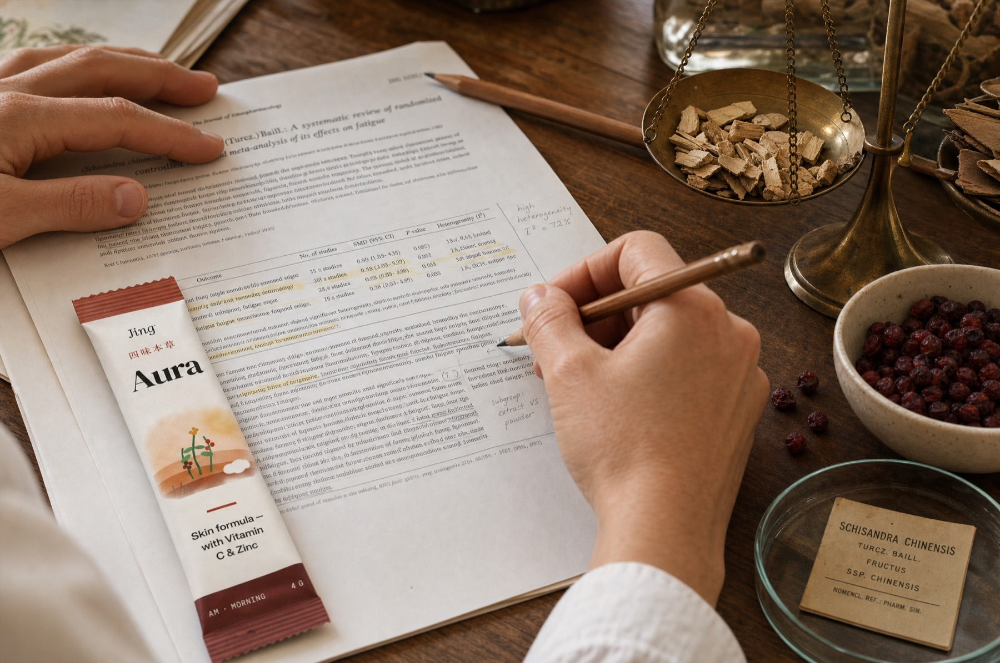
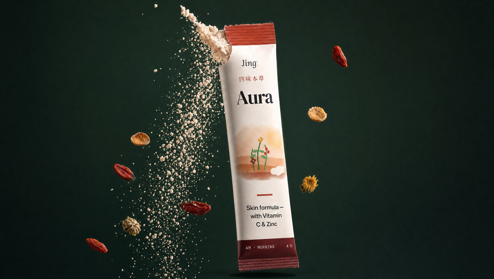

We read the studies first.
Jing didn't start as a supplement brand. It started as twelve months in the literature.
It began with reading labels.
There's a moment most people have when they first get serious about their health. You start reading labels. You start asking questions. And you start noticing that the supplement industry — a market worth more than $60 billion globally — is almost entirely built on blind trust.
Vague labelling. Paid anecdotal stories. Claims that reference a 3,000-year tradition without a single link to a peer-reviewed study.
We had that moment in Melbourne. And instead of accepting it, we went to the literature.

Twelve months.
4,800 studies.
Before Jing sold anything, it was a research project: a science-backed Traditional Chinese Medicine formulary. We spent a year reviewing the clinical evidence for TCM herbs — the active compounds, the mechanisms, the trial quality — and rated it honestly, herb by herb.
We published the evidence whether it supported a herb or not. If a meta-analysis weakened the case, we updated the rating. That discipline — if we can't cite it, we won't claim it — became the company.
Aura is what happened when four botanicals earned a product.
Most brands show you a mood.
We show you our work.
- Full doses on the label — no proprietary blends
- Only authorised nutrient claims
- Developed and designed in Melbourne
Take Traditional Chinese Medicine seriously as pharmacology — and hold it to modern proof.
Three millennia of pharmacology.
Now with peer review.
The tools of modern clinical research are being applied to traditional systems at scale for the first time — randomised controlled trials, HPLC standardisation, pharmacokinetic studies. Many of the herbs ancient physicians classified as superior tonics genuinely hold up under scrutiny. Many don't. We tell you which is which.
Every Aura ingredient carries a full dossier: the tradition, the research area, and where the evidence actually sits.
Read our standards
We didn't set out to start a supplement company. We set out to answer a simpler question: which of these herbs actually do anything?
A year in the literature later, we had a formulary, a rating system, and a short list of botanicals whose evidence we were happy to put our names behind. Aura is that short list — four botanicals with their doses printed on the box, fortified with two nutrients that carry authorised claims, made into a ritual simple enough to keep.
We're not doctors, and we'll always say so. What we can promise is this: we will never sell you a claim we can't cite, and when the evidence changes, our labels and our pages will change with it.
Thank you for taking your body seriously. So do we.
— The Jing team, Melbourne
Built on evidence.
Kept by ritual.
One honest stick, every morning — from A$75 / month.